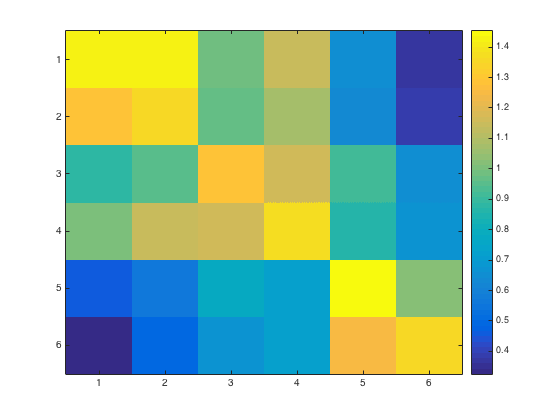

Exercise with cosmo_correlation_measure
Split-half correlation analysis using cosmo_correlation_measure
- For CoSMoMVPA's copyright information and license terms, #
- see the COPYING file distributed with CoSMoMVPA. #
Contents
Single subject analysis over all categories in VT
% Set the data path config=cosmo_config(); study_path=fullfile(config.tutorial_data_path,'ak6'); subject_id='s01'; mask_label='vt_mask'; data_path=fullfile(study_path,subject_id); % data from subject s01 % Define data locations and load data from even and odd runs mask_fn=fullfile(data_path, [mask_label '.nii']); % whole brain % Load data for odd runs data_odd_fn=fullfile(data_path,'glm_T_stats_odd.nii'); ds_odd=cosmo_fmri_dataset(data_odd_fn,'mask',mask_fn,... 'targets',1:6,'chunks',1); % Load data for even runs data_even_fn=fullfile(data_path,'glm_T_stats_even.nii'); ds_even=cosmo_fmri_dataset(data_even_fn,'mask',mask_fn,... 'targets',1:6,'chunks',2); % Combine even and odd runs into single dataset, store in ds_odd_even % Hint: use cosmo_stack % >@@> ds_odd_even=cosmo_stack({ds_odd, ds_even}); % <@@< % remove constant features (due to liberal masking) ds_odd_even=cosmo_remove_useless_data(ds_odd_even); % display dataset fprintf('Dataset input:\n'); cosmo_disp(ds_odd_even); % Part 1: compute correlation difference % Hint: - apply cosmo_correlation_measure to ds_odd_even % - because correlation difference and split-half correlations % are the defaults, no second argument (options) is required % for cosmo_correlation_measure. % >@@> ds_corr=cosmo_correlation_measure(ds_odd_even); % <@@< fprintf('\nDataset output (correlation difference):\n'); cosmo_disp(ds_corr); fprintf(['Average correlation difference between matching and '... 'non-matching categories in %s for %s is %.3f\n'],... mask_label, subject_id, ds_corr.samples); % Part 2: compute the raw Fisher-transformed correlation matrix, % and store the results in 'c_raw' % % (Hint: use a struct 'args' with args.output='correlation' as second % argument for cosmo_correlation_measure) % >@@> args=struct(); args.output='correlation'; c_raw=cosmo_correlation_measure(ds_odd_even,args); % <@@< fprintf('\nDataset output (Fisher-transformed correlations):\n'); cosmo_disp(c_raw) % Because a measure returns .samples as a column vector, the % confusion matrix is returned in a flattened form. % The data can be put back in matrix form using cosmo_unflatten. matrices=cosmo_unflatten(c_raw,1); imagesc(matrices); colorbar();
Dataset input:
.samples
[ 1.16 5.14 2.04 ... 2.08 1.61 1.67
1.75 4.94 2.99 ... 2.58 2.08 1.7
2.04 3.9 1.49 ... 2.61 2.96 3.05
: : : : : :
0.504 3.69 0.882 ... 3.05 2.84 3.05
2.56 4.13 2.61 ... 2.46 1.87 2.59
1.75 3.46 1.08 ... 2.77 2.28 3 ]@12x384
.sa
.chunks
[ 1
1
1
:
2
2
2 ]@12x1
.targets
[ 1
2
3
:
4
5
6 ]@12x1
.fa
.i
[ 27 28 30 ... 52 53 52 ]@1x384
.j
[ 24 24 24 ... 25 25 26 ]@1x384
.k
[ 3 3 3 ... 9 9 9 ]@1x384
.a
.fdim
.labels
{ 'i'
'j'
'k' }
.values
{ [ 1 2 3 ... 78 79 80 ]@1x80
[ 1 2 3 ... 78 79 80 ]@1x80
[ 1 2 3 ... 41 42 43 ]@1x43 }
.vol
.mat
[ 3 0 0 -122
0 3 0 -114
0 0 3 -11.1
0 0 0 1 ]
.xform
'scanner_anat'
.dim
[ 80 80 43 ]
Dataset output (correlation difference):
.samples
[ 0.53 ]
.sa
.labels
{ 'corr' }
Average correlation difference between matching and non-matching categories in vt_mask for s01 is 0.530
Dataset output (Fisher-transformed correlations):
.samples
[ 1.42
1.29
0.878
:
0.673
1.03
1.35 ]@36x1
.sa
.half1
[ 1
2
3
:
4
5
6 ]@36x1
.half2
[ 1
1
1
:
6
6
6 ]@36x1
.a
.sdim
.labels
{ 'half1' 'half2' }
.values
{ [ 1 [ 1
2 2
3 3
4 4
5 5
6 ] 6 ] }
 Group analysis over all categories in VT using correlation measure
% Compute correlation measure for each subject individually. subject_ids={'s01','s02','s03','s04','s05','s06','s07','s08'}; nsubjects=numel(subject_ids); mask_label='vt_mask'; % allocate a cell for the output of the measure for each subject ds_corr_cell=cell(nsubjects,1); % Apply correlation measure for each subject using % cosmo_correlation_measure. % - compute the correlation measure using cosmo_correlation_measure; % this should give a dataset structure with ds.samples of size 1x1 % - because statistics are computed later, add to the output: % * .sa.chunks : the subject number % * .sa.targets: 1 (for each subject) % - store the result of the k-th subject in ds_corr_cell{k} for subject_num=1:nsubjects subject_id=subject_ids{subject_num}; % set path for this subject data_path=fullfile(study_path,subject_id); % Define data locations and load data from even and odd runs mask_fn=fullfile(data_path, [mask_label '.nii']); % whole brain data_odd_fn=fullfile(data_path,'glm_T_stats_odd.nii'); ds_odd=cosmo_fmri_dataset(data_odd_fn,'mask',mask_fn,... 'targets',1:6,'chunks',1); data_even_fn=fullfile(data_path,'glm_T_stats_even.nii'); ds_even=cosmo_fmri_dataset(data_even_fn,'mask',mask_fn,... 'targets',1:6,'chunks',2); % Combine even and odd runs ds_odd_even=cosmo_stack({ds_odd, ds_even}); % remove constant features (due to liberal masking) ds_odd_even=cosmo_remove_useless_data(ds_odd_even); % apply correlation measure for this subject, and store % the result in 'ds_corr' % >@@> ds_corr=cosmo_correlation_measure(ds_odd_even); % <@@< % set targets and chunks for the output, so that cosmo_stat can be used % below ds_corr.sa.targets=1; ds_corr.sa.chunks=subject_num; % store result in the cell array 'ds_corr_cell' at the 'subject_num'-th % position % >@@> ds_corr_cell{subject_num}=ds_corr; % <@@< end % combine the data from all subjects (in 'ds_corr_cell') into one dataset % using cosmo_stack, and assign the result to a variable 'ds_all' % >@@> ds_all=cosmo_stack(ds_corr_cell); % <@@<
Compute group-level statistics
% run one-sample t-test again zero to compute the t-value and p-values % against the null hypothesis of a mean of zero. % % hint: use matlab stats toolbox's ttest (if present), or % use cosmo_stat: % * for t-statistics, use 't' as second argument % * to convert a 't' to 'p' value, use 'p' as third argument % >@@> ds_t=cosmo_stat(ds_all,'t'); % t-test against zero ds_p=cosmo_stat(ds_all,'t','p'); % convert to p-value samples=ds_all.samples; fprintf(['correlation difference in %s at group level: '... '%.3f +/- %.3f, %s=%.3f, p=%.5f (using cosmo_stat)\n'],... mask_label,mean(samples),std(samples),... ds_t.sa.stats{1},ds_t.samples,ds_p.samples); % <@@< % Using matlab's stat toolbox (if present) if cosmo_check_external('@stats',false) % >@@> [h,p,ci,stats]=ttest(samples); fprintf(['correlation difference in %s at group level: '... '%.3f +/- %.3f, t_%d=%.3f, p=%.5f (using matlab stats '... 'toolbox)\n'],... mask_label,mean(samples),std(samples),stats.df,stats.tstat,p); % <@@< else fprintf('Matlab stats toolbox not found\n'); end
correlation difference in vt_mask at group level: 0.399 +/- 0.165, Ttest(7)=6.846, p=0.00024 (using cosmo_stat) correlation difference in vt_mask at group level: 0.399 +/- 0.165, t_7=6.846, p=0.00024 (using matlab stats toolbox)